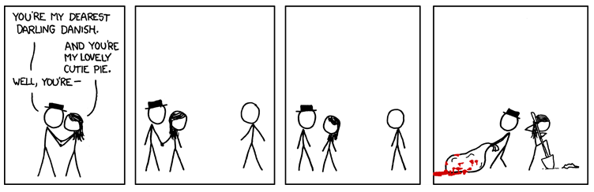
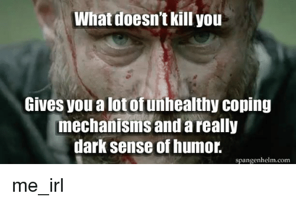
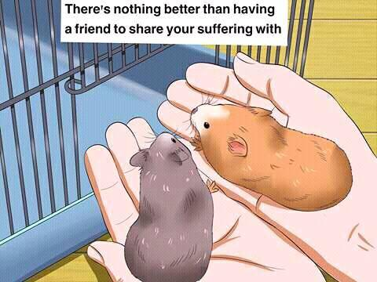

We Know
"Sweet mother, sweet mother, send your child unto me, for the sins of the unworthy must be baptized in blood and fear"
―The Black Sacrament ritual
(Not relevant but i noticed Secondlife's logo resembles the Dark Brotherhood sign in Skyrim)
Hi, you probably found this from my SL profile.
I've been playing SL since 2012 but I've been banned several times and please don't ask why.
Friends come and go, nothing is permanent in this world even in virtual life. I consider secondlife as my personal development environment. It is a term mostly used in software industries, think of it as a sandbox where I can do whatever I want without destroying the entire system if I made an epic mistake. The reason I came back is to tests and see myself with a companion who understands my dynamics. I found myself more productive by collaborating and taking the lead, but my social anxiety hinders me from working with others. If you'd like to engage in this kind of Role-play where I will take the dominant figure who will be in charge of most of the decisions and technical aspect of the game (e.i. Scripting, RLV, etc). While you keep me encouraged, entertained and involved in the activities that you will lay out for me daily (if possible). The challenge is to survive the toxic players of second life, obtain lindens without spending real life money and keep the companionship as long as possible.

Requirements:
- Must be female in RL. "please don't make it awkward for me I don't care what kind of sexual orientation you are ingame but please be female in real life."
- Knows how to navigate, fix and adjust their outfits or atleast familar with the basic interface of secondlife viewer (preferably Firestorm).
- Voice chat! communication is needed especially when we are engaged in a project. I don't require you to be on voice daily or if it's not convenient for you in real life but please get yourself a decent headphone. English is not my native tongue so there will be times I will misunderstand your tone from your typed text.
- I have a very low libido because of the cocktail of psych meds im taking so don't expect a very sexual dynamics. Although I will let you roam free if your service is not required.
- Willing to be monitored everytime you're online with your avatar. I will be giving you a modified collar that sends information to my phone of your whereabouts, nearby people and neaby chats.
- Creative, Energetic and willing to share ideas. I love lsl scripting but I fail on building and all the aesthetic aspects. This is where you fill the void.
- Willing to learn. I believe we will be spending a lot of time exploring and tinkering stuff.
- Your goal is to please me. I easily get bored so you need to be spontaneous.
About me
RL Details:
- Gender: Male / Heterosexual
- Age: 36
- Location: Southern California / born and raised in the Philippines.
- Occupation: Tech and Security Consultant. CTO at two start-ups. Working at home.
- Pros: I am good in problem solving. They consider me as a miracle worker. The guy you should be with incase of zombie apocalypse.
- Cons: Suffering from major depressive disorder, severely aphathetic, extremely introvert.
- I developed a very dark sense of humor through the years of unhealthy coping mechanism. It is my cognitive behavioral strategy that serves a dual purpose while I am exposed to the topics I fear the most along with its super awesome bodily calming effects. So please be sensitive to my insensitivity.

SL Details:
- My main avatar was BryanKent. I used to make custom auction system for breedable specially Feenux. I am the one that revolutionized the breedable auctions by removing the use of notecards and make the system intuitive and easy to use for the patrons. It was a good business until my partner left me and couldn't handle all the customer support and inquiries. I left the game and come back within a year then made a network of automated fishbot milking goldtokens.net for lindens. I used to engage in kidnap/bondage RP by using my RLV script. My hobby is to abduct someone and transform them to my liking then release them with a modified collar where I can listen and sometimes control their conversation. There are times I forced them into prostitution and taught them how to earn lindens until it becomes their trade skill. I experience what it's like to run a harem and deal with everyone's temperament. It was a soul draining experience. I have some tendencies to troll stranger like derailing a current RP or just being a complete dick, I am very sorry but I find relief in bathing is someone else's tears. Now I'm back again with a new adventure in mind. I'm planning to put up a blog once I found the right person to be my partner in crime.
Personality
Personality Type: Logician (INTP-A)
Mind: Interaction with environment.
Energy: How I channel my mental energy.
Nature: Determines how I make decisions and cope with emotions.
Tactics: Approach to work, planning and decision-making.
Do's and Don'ts
"Because everybody has one."- There is a very slim chance that I will approach you, So please drop an IM but please keep it simple, keep it short, state your business or I will just sigh while closing your IM box.
- It's good to have friends, but I will test the waters and figure out where should I draw the line. You will find me a bit annoying and candid but please do not take it seriously it will be nice if you are also honest with me and tell me when to stop.
- If you're looking for a dominant to satisfy your submissive desires and thinks I'm a good candidate, please address me properly and act like you mean it. A person applying for a job doesn't come for an interview unprepared and casually talking to the interviewee. Always stay on your best behavior because I will constantly gauge your intentions.
- Stop lecturing me about D/S because there is no set standards and it all depends on the parties mutual agreement. If I can't convince you to compromise on something that I want or vice versa it will not work and an utter waste of time.
- There is no way I can take the title of a dominant if the person has a stronger personality than me. Always ask permission if you want to talk freely, be careful how you compose your words and do not say anything that can be subject to a lot of different interpretations. I might think you are being sarcastic especially if what you said is typewritten.
- We can be friends at first then slowly progress to d/s but also understand that my first impression has a lasting effect. It will be hard for me to take the role if I was happy just being your friend.
